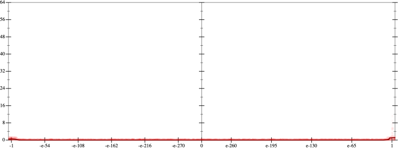
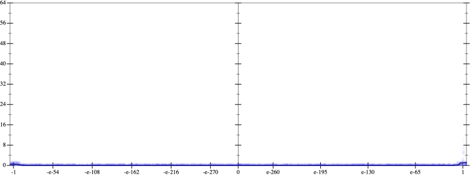
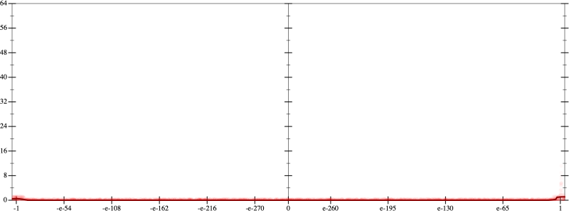
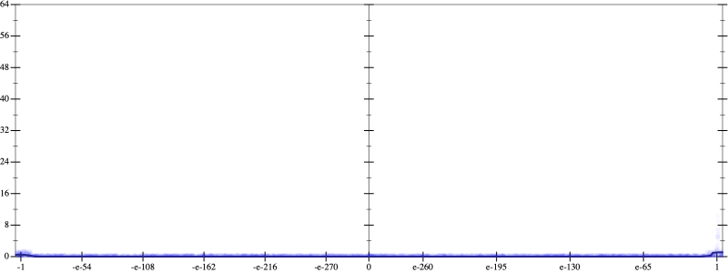
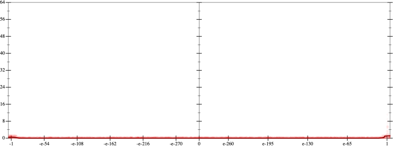
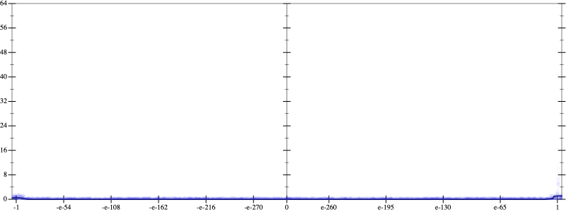

Error
 
Bits error versus x
Bits error versus x
Results
Initial program 0.0
Time bar (total: 1.9m)Debug log
herbie shell --seed 243405409
(FPCore (x)
:name "5"
:pre (and (>= x -100000.0) (<= x 100000.0))
(+ (+ (+ (+ (+ 1.0 (* -5.0 x)) (* 5.0 (* x x))) (* -1.666667 (* (* x x) x))) (* 0.208333 (* (* (* x x) x) x))) (* -0.008333 (* (* (* (* x x) x) x) x))))